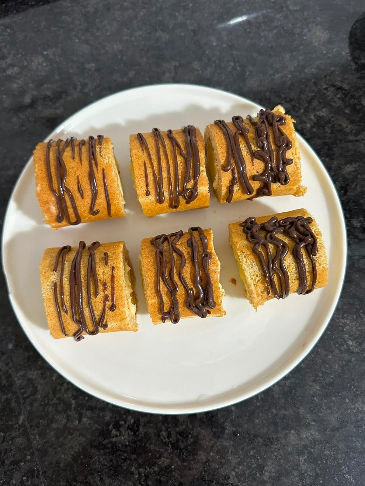

Muz ve orman meyveleriyle hazırlanan hafif rulo pasta.
Krema için süt ısıtılır. Yumurta, elma suyu ve nişasta çırpılır. Süt azar azar eklenir ve karıştırılır. Karışım ocağa alınır, koyulaşana kadar pişirilir. Ocaktan alındıktan sonra tereyağı eklenir ve karıştırılır. Streç temas ettirilerek soğumaya bırakılır.
Yumurta akı ve sarısı ayrılır. Aklar köpük olana kadar çırpılır. Sarılar elma suyu ile çırpılır. Süt ve yağ eklenir. Un ve kabartma tozu ilave edilir. Yumurta akı dikkatlice eklenir ve karıştırılır.
Hazırlanan karışım tepsiye dökülür. Önceden ısıtılmış 180°C’de yaklaşık 15 dakika pişirilir.
Orman meyveleri pişirilir. Kaynayınca kısık ateşte yoğunlaşana kadar tutulur. Ocaktan alındıktan sonra blenderdan geçirilir.
Fırından çıkan kek ters çevrilir ve soğumaya bırakılır. Üzerine krema eşit şekilde yayılır. Muz yerleştirilir ve dikkatlice rulo şeklinde sarılır.
Hazırlanan pasta buzdolabında dinlendirilir. Dilimlenerek servis edilir.
Kaynak: @pastaatolyesiist